5.3.3.
ПОСТПРОЦЕССОР
5.3.3.1. Старт
ПОСТПРОЦЕССОРА
5.3.3.2. Меню ПОСТПРОЦЕССОРА
5.3.3.3. Универсальные органы
управления ПОСТПРОЦЕССОРА
ПОСТПРОЦЕССОР системы КИПР-Win предназначен для визуализации результатов работы программ ПРОЦЕССОРА системы и выпуска расчетной документации. Исходными данными для ПОСТПРОЦЕССОРА являются файлы FW, формируемые программами ПРОЦЕССОРА.
5.3.3.1. Старт ПОСТПРОЦЕССОРА
При старте ПОСТПРОЦЕССОРА могут возникнуть две ситуации.
Ситуация 1. Старт ПОСТПРОЦЕССОРА из “ОБОЛОЧКИ системы” был осуществлен без решения задачи ПРОЦЕССОРОМ системы приводит к появлению сообщения вида
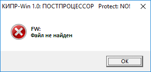
Реакция пользователя:
Стартовать ПРОЦЕССОР и после завершения его работы запустить ПОСТПРОЦЕССОР.
Ситуация 2. До старта ПОСТПРОЦЕССОРА в ПРЕПРОЦЕССОРЕ системы был отредактирован один из файлов исходных данных во внешнем представлении (CN, MT, LD, MD) и выход из ПРЕПРОЦЕССОРА был осуществлен с помощью позиции “9. Выход” Меню ПРЕПРОЦЕССОРА. В этом случае на экране дисплея появлется сообщение вида
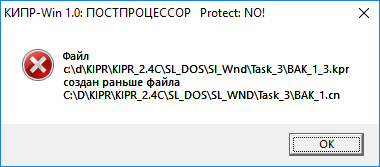
Реакция пользователя:
Стартовать ПРЕПРОЦЕССОР и выйти из него с помощью позиции “ 7. Проц.” Меню ПРЕПРОЦЕССОРА. В этом случае вновь будут созданы файлы исходных данных во внешнем представлении (CNX, LDX, MDX), обновлен файл-проект KPR и автоматически запущен ПРОЦЕССОР системы (с одновременным выходом из ПРЕПРОЦЕССОРА). После того, как ПРОЦЕССОР завершит работу, необходимо вновь запустить ПОСТПРОЦЕССОР.
После удачного входа в ПОСТПРОЦЕССОР на экране дисплея появляется “Окно ПОСТПРОЦЕССОРА” (рис. 1) с изображением расчетной схемы конструкции.
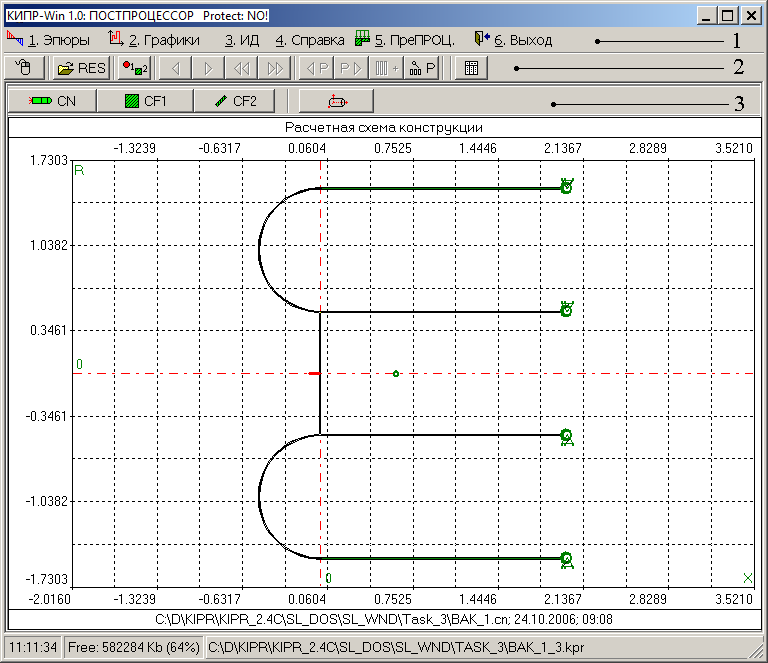
Рис. 1
Группы органов управления (рис. 1): “Меню ПОСТПРОЦЕССОРА” (поз. 1); группа “Универсальные органы управления” (поз. 2); группа “Объекты отрисовки” (поз. 3).
5.3.3.2.
Меню ПОСТПРОЦЕССОРА
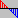
1. Эпюры
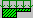
5. ПреПРОЦ.Меню ПОСТПРОЦЕССОРА изображено на рис. 2.
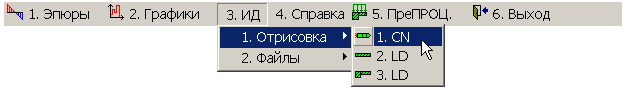
Рис. 2
Выбор позиции 1 ( 1. Эпюры) Меню ПОСТПРОЦЕССОРА приводит к появлению группы органов управления “Объекты отрисовки” (рис. 1, поз. 3), предназначенной для управления отрисовкой результатов расчета на элементах конструкции (рис. 3).
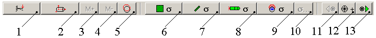
Рис. 3
Кнопки на рис. 3 имеют следующее назначение:
- Кнопка в поз. 1 – отрисовка деформированного состояния конструкции;
- Кнопка
 в поз. 2 – пространственное
изображение деформированного состояния конструкции (этот режим
активизируется лишь после отрисовки
деформированного состояния конструкции - кнопка
в поз. 1);
в поз. 2 – пространственное
изображение деформированного состояния конструкции (этот режим
активизируется лишь после отрисовки
деформированного состояния конструкции - кнопка
в поз. 1); - Кнопка в поз. 3 – увеличить масштаб избражения перемещений;
- Кнопка в поз. 4 – уменьшить масштаб изображения перемещений;
- Кнопка в поз. 5 – отрисовка перемещений по окружности;
- Кнопка в поз. 6 – отрисовка напряжений в CF1 (шпангоуты);
- Кнопка в поз. 7 – отрисовка напряжений в слоях в CF2 (оболочки);
- Кнопка в поз. 8 – глобальная отрисовка напряжений (на всей конструкции);
- Кнопка в поз. 9 – отрисовка напряжений по окружности;
- Кнопка в поз. 10 – выбор типа изображаемого напряжения;
- Кнопка в поз. 11 (альтернатива – комбинация клавиш <Alt+стрелка влево>) – переход к предыдущей точке ортогонализации CF2 (оболочки);
- Кнопка в поз. 12 (после нажатия принимает вид ) – отрисовка положения текущей точки ортогонализации CF2 (оболочки); нажатие на кнопку возвращает в предыдущий режим отрисовки;
- Кнопка в поз. 13 (альтернатива – комбинация клавиш <Alt+стрелка вправо>) – переход к следующей точке ортогонализации CF2 (оболочки).
Выбор позиции 2 ( 2. Графики) Меню ПОСТПРОЦЕССОРА приводит к появлению группы органов управления “Объекты отрисовки” (рис. 1, поз. 3), предназначенной для управления отрисовкой результатов расчета в режиме графиков (рис. 4).
|
Программа ПРОЦЕССОРА |
Органы управления |
|
CR030 |
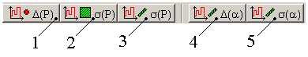 |
|
CR010, CR020 |
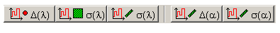 |
|
CR040 |
|
|
CR060, CR070,
CR080 |
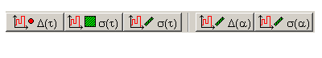 |
Рис. 4
Здесь используются следующие обозначения:
Δ – перемещения; σ - напряжения; P – номер порции (для программы CR030 – номер n гармоники разложения внешней нагрузки в ряды Фурье по координате α2); λ - параметр нагружения; ω - частота возбуждения; τ - текущее время.
Кнопки на рис. 4 управляют отрисовкой графиков:
- кнопка в поз. 1 - перемещений CF0 (глобальные узлы) как функций соответствующего методического параметра расчета;
- кнопка в поз. 2 – напряжений в CF1 (шпангоуты) как функций соответствующего методического параметра расчета;
- кнопка в поз. 3 – напряжений в слоях CF2 (оболочки) как функций соответствующего методического параметра расчета;
- кнопка в поз. 4 – локальных перемещений в CF2 (оболочки) как функций локальной координаты α1;
- кнопка в поз. 5 – напряжений в слоях CF2 (оболочки) как функций локальной координаты α1.
Выбор позиции 3 (3. ИД) Меню ПОСТПРОЦЕССОРА приводит к появлению выпадающего меню, предназначенного для вызова инструментария просмотра информации о расчетном случае. Эта информация представлена в двух видах: графическом (путь доступа к этому режиму показан на рис. 2) и текстовом (путь доступа к этому режиму показан на рис. 5).
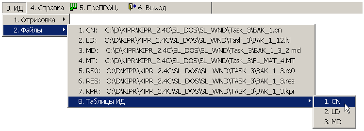
Рис. 5
Графическое представление информации о расчетном случае аналогично тому, что было описано в соответствующих разделах (3. CN; 4. LD; 5. LD), посвященных технологии работы с ПРЕПРОЦЕССОРОМ системы.
В текстовом режиме вызывается редактор с загрузкой выбранного из меню файла. Следует заметить, что все файлы расчетного случая загружаются ПОСТПРОЦЕССОРОМ системы лишь для просмотра.
Позиция 4 (4. Справка) Меню ПОСТПРОЦЕССОРА предназначена для вызова инструкции пользователя и информации о версии программы.
Выбор позиции 5
(
5. ПреПРОЦ.) Меню ПОСТПРОЦЕССОРА приводит к выходу из ПОСТПРОЦЕССОРА и автоматической
загрузке ПРЕПРОЦЕССОРА системы.
Выбор позиции 6 (6. Выход) Меню ПОСТПРОЦЕССОРА приводит к выходу из ПОСТПРОЦЕССОРА в программную оболочку системы.
5.3.3.3. Универсальные органы
управления ПОСТПРОЦЕССОРА
Группа “Универсальные органы управления ПОСТПРОЦЕССОРА” (рис.1, поз. 2; рис. 6) предназначена для управления общими режимами работы ОТРИСОВЩИКА.
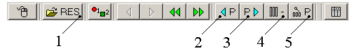
Рис. 6
На рис. 6 в поз 1-5 показаны органы управления, отличающиеся от стандартных Универсальных органов управления ОТРИСОВЩИКА.
Кнопки на рис. 6 имеют следующее назначение:
- Кнопка в поз. 1 - для загрузки файла протокола RES работы ПРОЦЕССОРА системы в РЕДАКТОР для просмотра (эту загрузку можно осуществить и с помощью позиции 4 (4. ИД) Меню ПОСТПРОЦЕССОРА);
- Кнопка в поз. 2 (альтернатива – комбинация клавиш <Ctrl+стрелка влево>) - для перехода к предыдущей порции результатов расчета;
- Кнопка в поз. 3 (альтернатива – комбинация клавиш <Ctrl+стрелка вправо>) - для перехода к следующей порции результатов расчета;
- Кнопка или в поз. 4 (кнопка-переключатель) – для включения ( ) или выключения ( ) режима масштабирования результатов расчета для всех просматриваемых элементов в текущем режиме отрисовки глобально по всем порциям;
- Кнопка в поз. 5 – для определения номера текущей порции результатов расчета.
При нажатии на кнопку в поз. 5 появляется следующее окно:
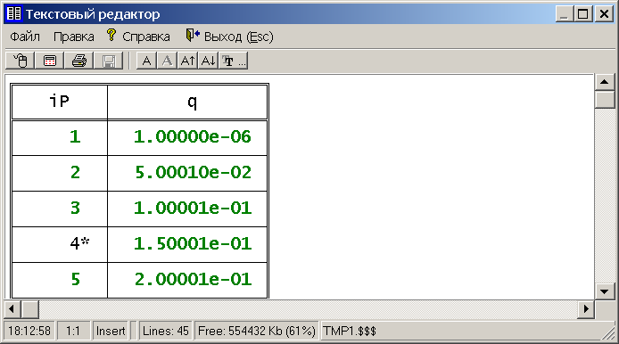
Рис. 7
В левой колонке изображенной на рис. 7 таблице – номера порций результатов расчета (звездочкой обозначена текущая порция); в правой колонке – соответствующее значение методического параметра (в зависимости от номера решаемой задачи – это параметр нагружения, текущее время; частота возбуждающей нагрузки).